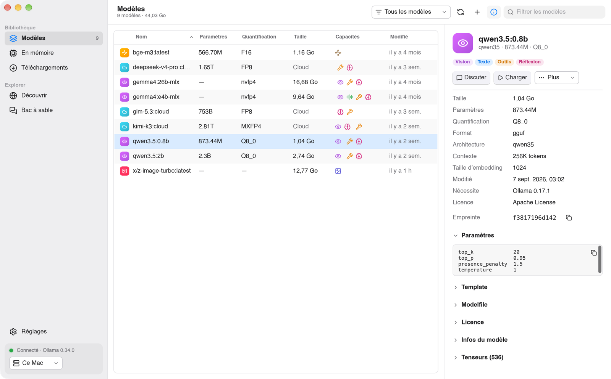
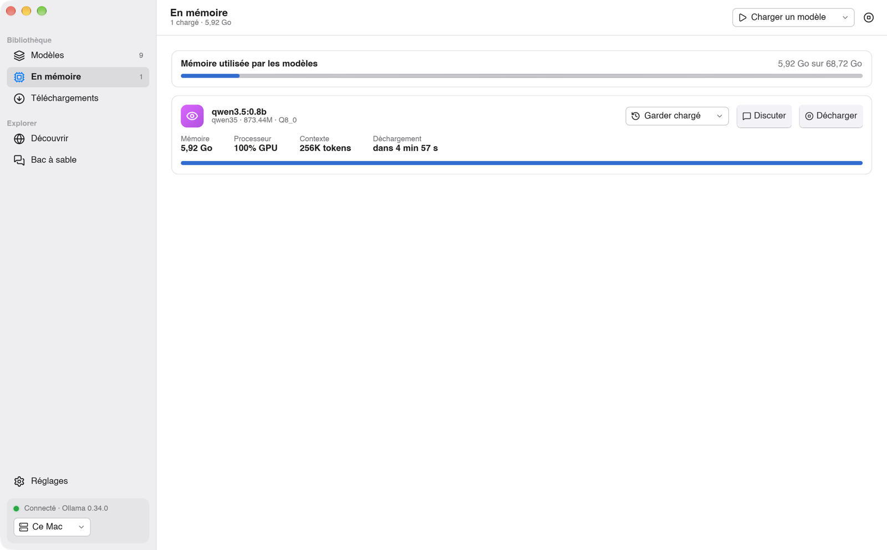
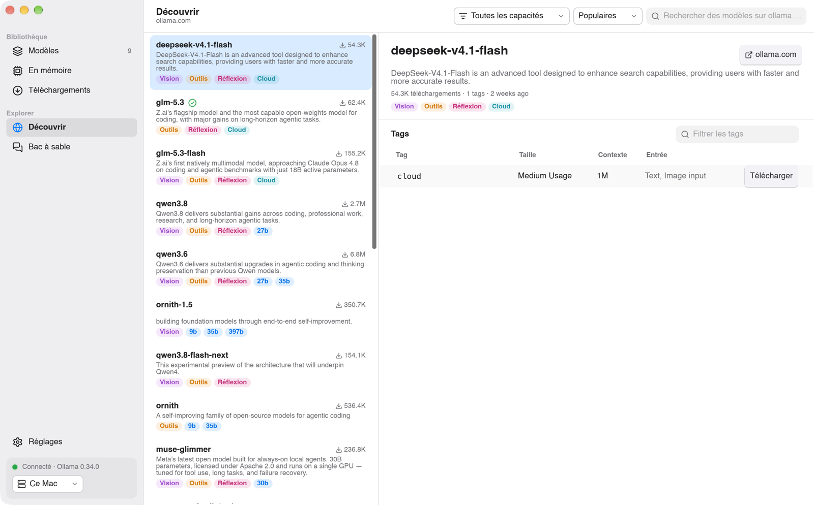
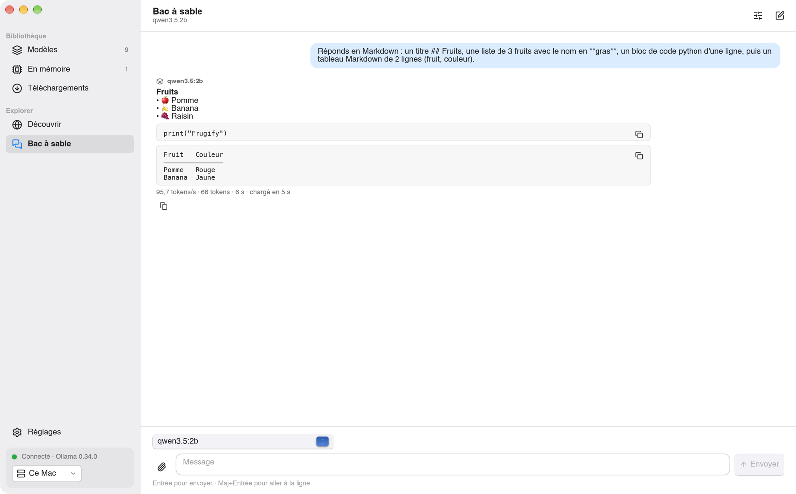
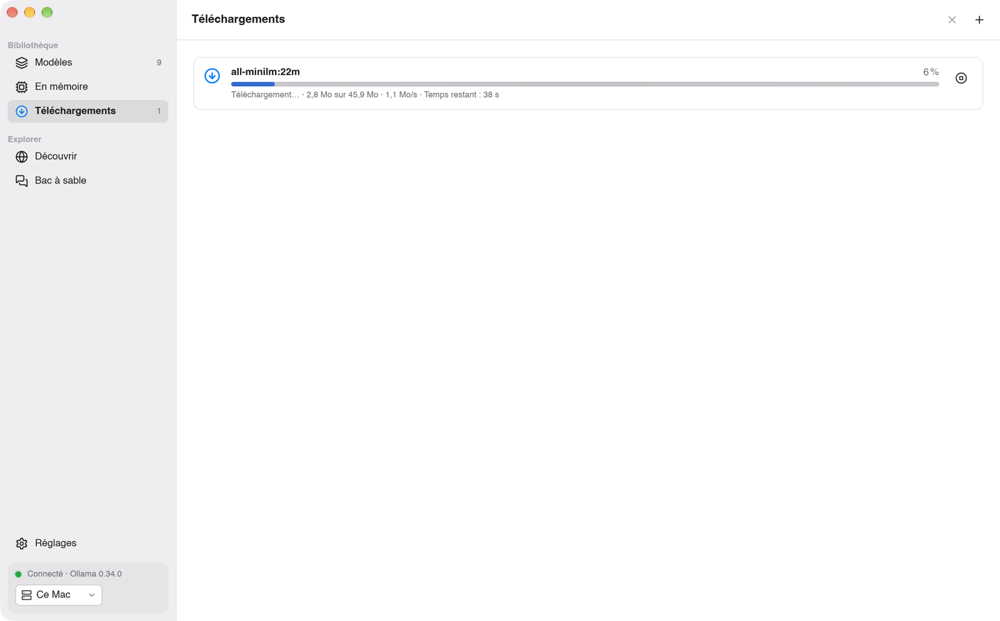

Ollama GUI
Manage your Ollama models on macOS and Windows. Pull, update, inspect, load, customize and chat, without the terminal. Gérez vos modèles Ollama sur macOS et Windows. Téléchargez, mettez à jour, inspectez, chargez, personnalisez et discutez, sans le terminal.

Everything about your models, in one placeTout sur vos modèles, au même endroit
Ollama GUI talks to the Ollama REST API of this computer or of any server on your network. Ollama GUI utilise l'API REST d'Ollama sur cet ordinateur ou sur n'importe quel serveur de votre réseau.
ModelsModèles
Size, parameters, quantization and capabilities of every model, with its full configuration: parameters, system prompt, template, Modelfile, license and tensors.Taille, paramètres, quantification et capacités de chaque modèle, avec sa configuration complète : paramètres, prompt système, template, Modelfile, licence et tenseurs.
UpdatesMises à jour
Finds outdated models by comparing digests with the Ollama registry, without downloading anything, and updates one or all of them in one click.Repère les modèles obsolètes en comparant les empreintes avec le registre Ollama, sans rien télécharger, et les met à jour en un clic.
DiscoverDécouvrir
Search the ollama.com library, filter by capability, browse every tag with its size and context window, and pull with live progress.Recherchez dans la bibliothèque ollama.com, filtrez par capacité, parcourez chaque tag avec sa taille et son contexte, et téléchargez avec la progression en direct.
MemoryMémoire
Loaded models with memory, CPU/GPU split and a countdown to unload. Load, unload or keep a model loaded longer, never forever.Modèles chargés avec leur mémoire, la répartition CPU/GPU et un compte à rebours. Chargez, déchargez ou gardez un modèle plus longtemps, jamais indéfiniment.
CustomizePersonnaliser
Create a model on top of another with its own system prompt, temperature, context window, top P and seed. Duplicate, rename and delete.Créez un modèle à partir d'un autre avec son prompt système, sa température, son contexte, son top P et sa graine. Dupliquez, renommez, supprimez.
PlaygroundBac à sable
Chat with a model and see its speed in tokens per second. Markdown replies, reasoning for thinking models, images for vision models.Discutez avec un modèle et voyez sa vitesse en tokens par seconde. Réponses en Markdown, réflexion des modèles « thinking », images pour les modèles de vision.
A closer lookEn images
Native-looking on each platform, in light and dark mode, in English and French. Un rendu natif sur chaque plateforme, en mode clair et sombre, en français et en anglais.




InstallInstallation
First install and start Ollama, on this computer or on a machine the app can reach. Installez et lancez d'abord Ollama, sur cet ordinateur ou sur une machine accessible.
macOS
- Download OllamaGUI-macOS.zip, unzip it and move Ollama GUI to Applications.Téléchargez OllamaGUI-macOS.zip, dézippez et glissez Ollama GUI dans Applications.
- The app is not notarized: the first time, right-click it and choose Open.L'app n'est pas notarisée : la première fois, clic droit puis Ouvrir.
Windows
- Run OllamaGUI-Windows-Setup.exe. No administrator rights needed.Lancez OllamaGUI-Windows-Setup.exe. Aucun droit administrateur requis.
- The installer is not code-signed: if SmartScreen warns you, choose More info → Run anyway.L'installeur n'est pas signé : si SmartScreen s'affiche, choisissez Informations complémentaires → Exécuter quand même.